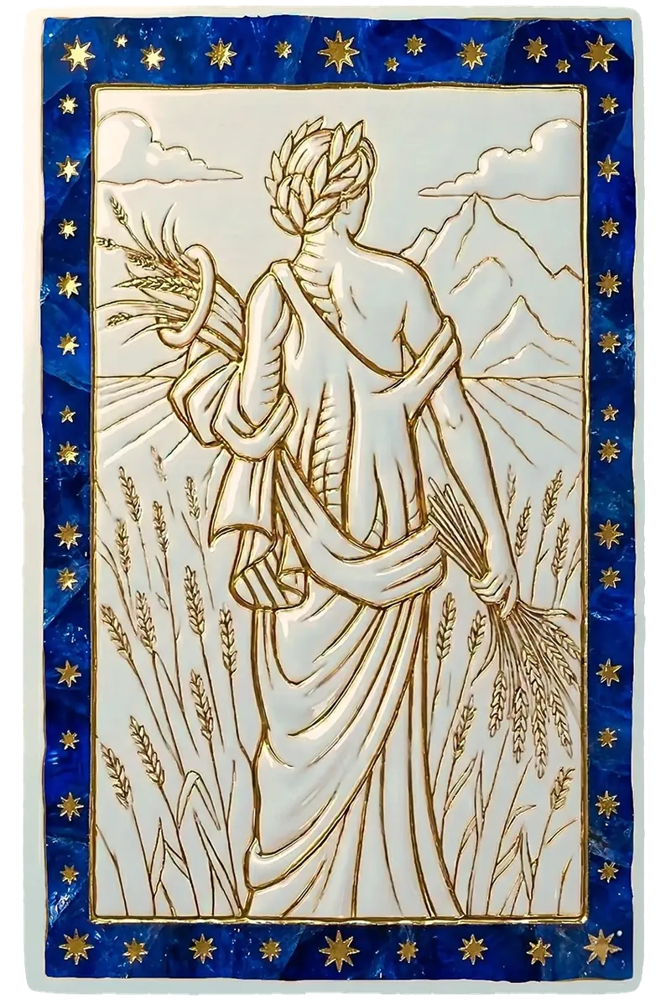

Amour
En amour, la Vierge se montre réservée au départ, puis profondément attentionnée. Elle prouve son amour par les actes : rendre service, prendre soin, être là. Elle a besoin de temps pour se livrer, et d'un partenaire qui ne la brusque pas.

Le signe
Sixième signe du zodiaque, la Vierge est un signe de Terre mutable gouverné par Mercure. Elle incarne la précision, le discernement et le sens du service.
La Vierge observe, analyse, améliore. Rien ne lui échappe : ni le détail qui cloche, ni la façon de faire mieux. Discrète, méthodique, fiable, elle trouve sa paix dans l'ordre et l'utilité. Derrière sa réserve se cache une grande sensibilité et un humour fin.
Son exigence est d'abord tournée vers elle-même, au point de parfois l'empêcher de savourer ses réussites. Sa leçon de vie consiste à accepter l'imperfection, chez les autres comme en elle, et à se faire confiance.
Amour
En amour, la Vierge se montre réservée au départ, puis profondément attentionnée. Elle prouve son amour par les actes : rendre service, prendre soin, être là. Elle a besoin de temps pour se livrer, et d'un partenaire qui ne la brusque pas.
Travail
Santé, recherche, gestion, édition, artisanat de précision, organisation : la Vierge excelle partout où la rigueur fait la différence. Elle est le pilier discret de bien des équipes.
Bien-être
Associée à l'intestin, la Vierge ressent son stress dans le ventre. Une hygiène de vie régulière, une alimentation soignée et des moments sans contrôle l'apaisent.
« Ce qui est assez bien est souvent déjà merveilleux. »
Chaque signe se divise en trois périodes d'environ dix jours, chacune teintée par un signe du même élément. Les dates varient légèrement selon les années.
Sixième signe du zodiaque, la Vierge est un signe de Terre mutable gouverné par Mercure. Elle incarne la précision, le discernement et le sens du service.
Le sens du détail, La fiabilité, L'intelligence pratique, Le dévouement, La modestie.
Le perfectionnisme, L'esprit critique, L'anxiété, La difficulté à lâcher prise.
Ses meilleures alliances sont Capricorne (98 %), Taureau (95 %), Cancer (90 %).